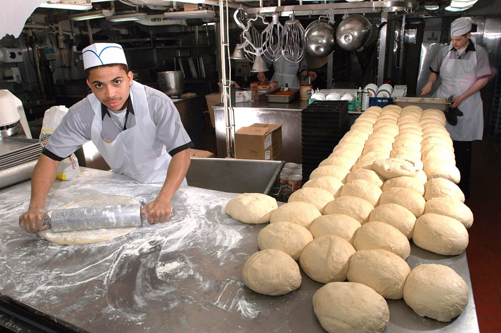
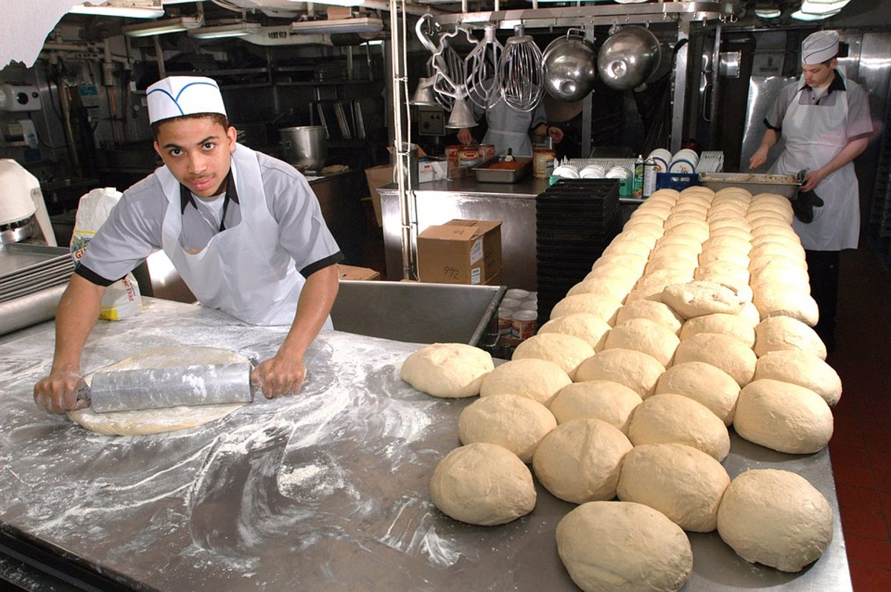

Gallteas con chispas
$600

$600
$500
$800
$1200
Somos una panadería artesanal comprometida con ofrecer los productos de mayor calidad y sabor. Desde nuestros humildes comienzos, nos hemos dedicado a hornear pan fresco y delicioso para nuestra comunidad. Nuestro equipo de panaderos apasionados trabaja cada día con ingredientes cuidadosamente seleccionados y técnicas tradicionales para garantizar que cada bocado refleje nuestro compromiso con la excelencia.
 
